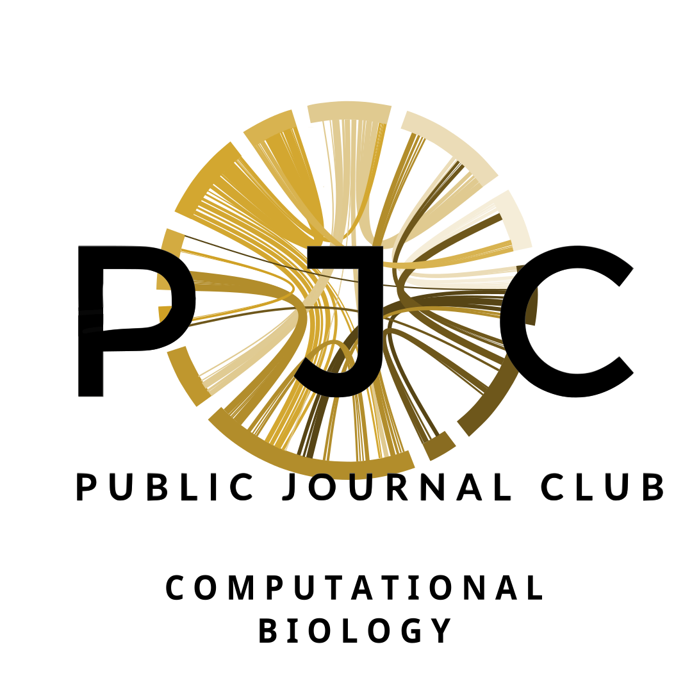

<nav class="navbar navbar-expand-lg navbar-light bg-light">
  <div class="container">
    
    <a class="navbar-brand" rel="author" href="{{ "/" | relative_url }}">    {{ site.title | escape }}</a>

    {%- assign page_paths = site.header_pages -%}
    <button class="navbar-toggler" type="button" data-toggle="collapse" data-target="#navbarSupportedContent"
      aria-controls="navbarSupportedContent" aria-expanded="false" aria-label="Toggle navigation">
      <span class="navbar-toggler-icon"></span>
    </button>
    <div class="collapse navbar-collapse" id="navbarSupportedContent">
      <ul class="navbar-nav ml-auto">
        <li class="nav-item">
          <a class="nav-link" href="https://github.com/combiopjc">Github</a>
        </li>
        <li class="nav-item">
          <a class="nav-link" href="https://twitter.com/PJCCompBio">  </a>
        </li>
      </ul>
    </div>
  </div>
</nav>
